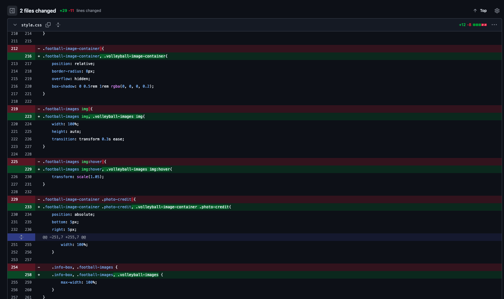

GITHUB PAGE
GitHub-Page
Positives
We find that collaboration in Github had good stucture and with the repositories it was easy to go back to the projects to know where the code went wrong
Negatives
It was a bit tedious to have to tell the other person when you where going to pull and push the projects so you didn't work at the same time, this was quite difficult in the start but we got the hang of it as we worked more together.
Commits history image 1
Commits history image 2

Specific change 1

Specific change 2
